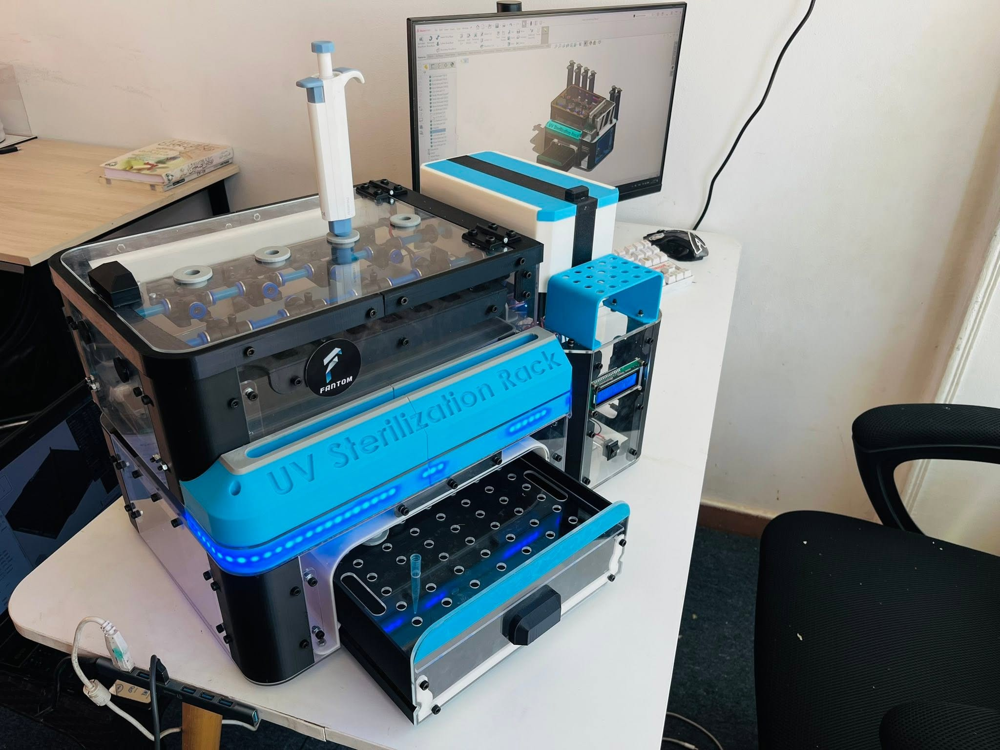
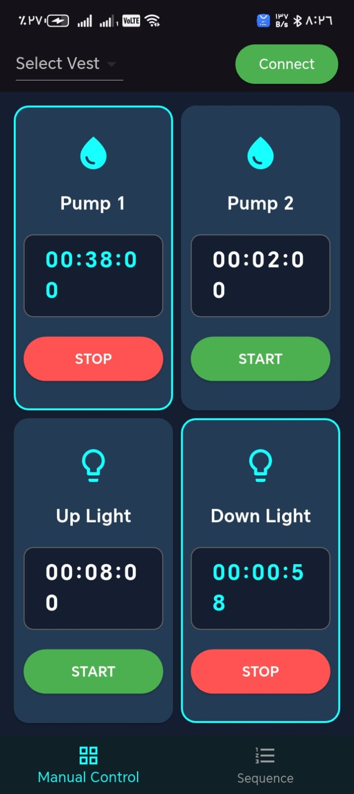
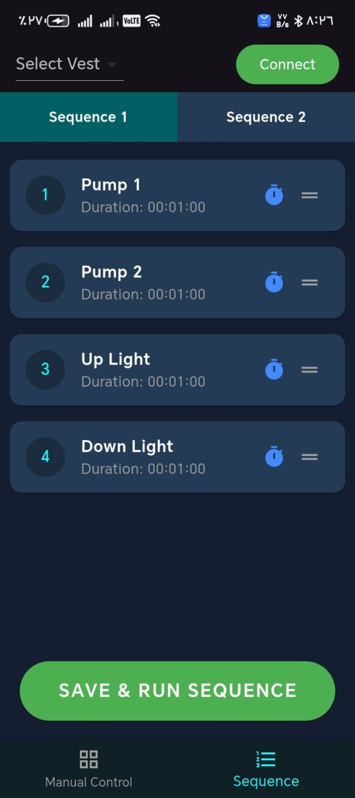

Overview
A Bluetooth-enabled medical sterilization system designed to automate the disinfection of surgical instruments. The system uses alcohol and water pumps, UV LEDs, and white LEDs to deliver thorough and configurable sterilization cycles for clinical environments.
Controlled through a custom mobile application, users can configure individual sterilization cycles or create fully customizable automated sequences. The app provides real-time status feedback and allows clinicians to tailor the process to specific instrument requirements.
The embedded controller manages pump timing, UV exposure duration, and LED activation with precise scheduling. Safety interlocks prevent UV exposure during cycle setup, and the system logs complete cycle history for compliance and quality assurance purposes.
Technologies
Gallery



